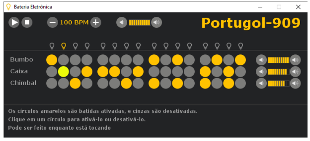

Marcos Vinícius - AI-APW-01
Dentre os exemplos presentes na ferramenta Portugol Studio, a que mais me chamou
atenção foi a Bateria Eletrônica na aba de música. Eu particularmente gosto bastante de criação
de música por softwares, já utilizei DAWs (Digital Audio Workstation) no passado e gostei
quando pude fazer algumas batidas simples utilizando esse exemplo da bateria eletrônica.
